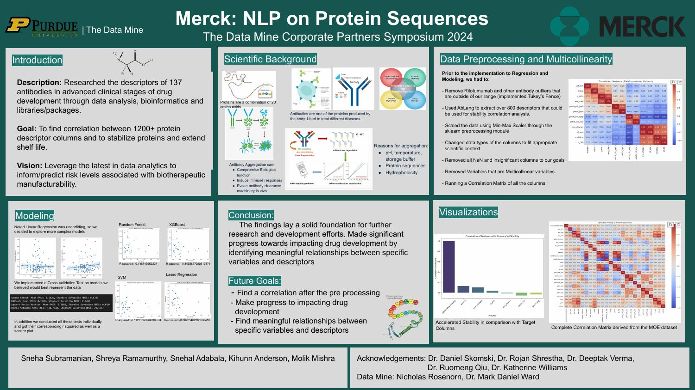
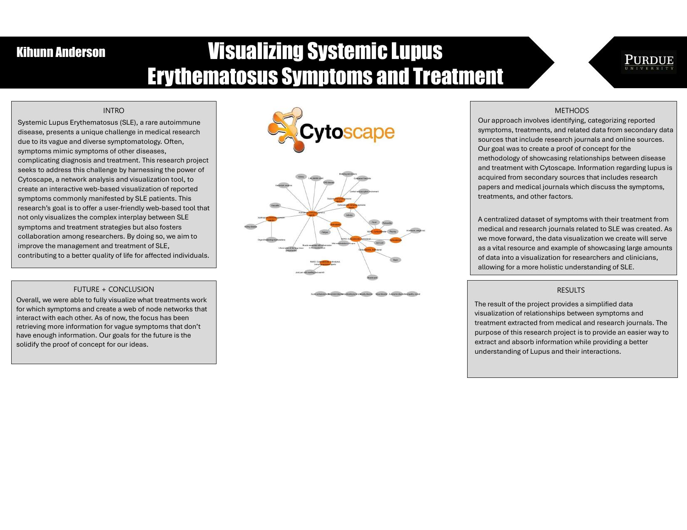
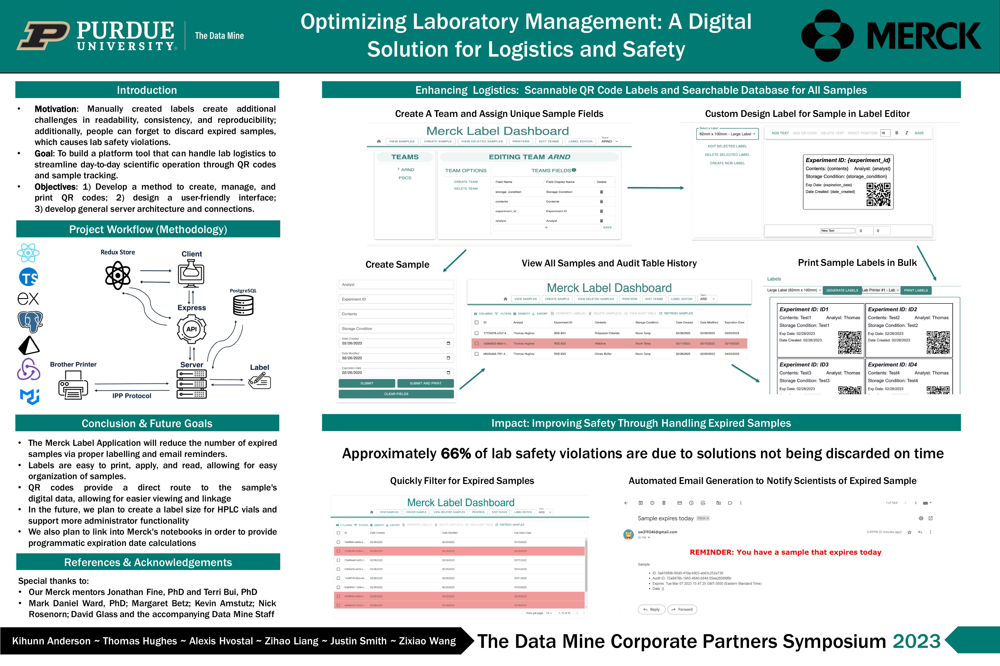

Portfolio

Merck: NLP on Protein Sequences
Analyzed over 1200 protein descriptors from antibodies in clinical trials to uncover relationships for improved drug stability. Explored advanced modeling techniques to identify variables affecting manufacturability.
View Presentation

Visualizing Lupus Symptoms and Treatments
Created an interactive Cytoscape-based visualization that maps connections between SLE symptoms and treatments. Aims to simplify diagnosis and research collaboration in autoimmune diseases.
View Poster

Optimizing Laboratory Logistics with Merck
Designed a digital labeling system using QR codes to streamline lab sample tracking and reduce expired sample incidents. Focused on enhancing lab safety and efficiency through automation.
View Poster